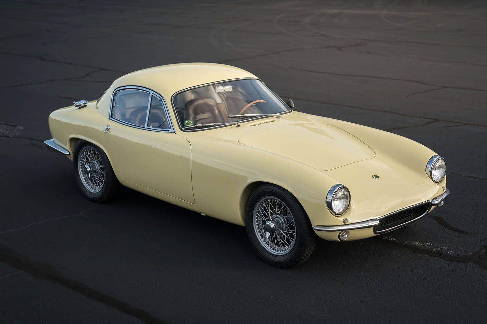

Lotus Elite или Lotus 14 был первой настоящей попыткой легендарного конструктора олина Чепмена создать дорожный автомобиль, а не бескомпромиссный гоночный снаряд. Небольшое купе обладало исключительной управляемостью, на фоне которой меркли жесткий ход, шум и плохая вентиляция в салоне, а также прочие проблемы с качеством. Дебют Elite на Лондонском автосалоне 1957 года вызвал оживленный интерес. На фоне автомобилей 50-х годов Lotus выглядел свежо и необычно. Среди гостей стенда оказалась принцесса Маргарет (младшая сестра царствующей королевы Елизаветы II), пожелавшая посидеть за рулем. Пристальное внимание публики было обеспечено, но случился конфуз – дверные замки заклинило и принцессу пришлось вызволять с помощью инструментов…
